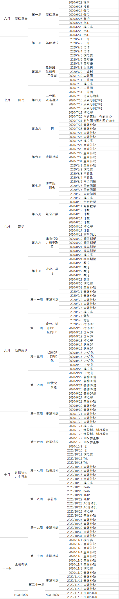

n-kw && n-c by others
这么臭的计划有存在的必要吗
今天刚刚考完SDOI2020。出了考场，一位学长告诉我，他们那一届大概要退役了，因为即将升入高二，文化课压力很大。wyh、lgy两位神仙学长好像也没考好。下一届就轮到我了，我觉得自己身上的担子越来越重了，必须认真学习了，不仅是为了自己，也是为了LYOI，不负我们可敬的教练的期望。因为我的教练，真可谓改变了我一生的恩人。
离NOIP2020还有五个月，时间所剩无几，打算在SDOI2021前搏一搏。主要分两个阶段，第一阶段是在NOIP2020前(6.22至11.13)，第二阶段是在NOIP2020后，SDOI2021前。目标是NOIP2020至少300分，最好400分以上，省选则是最好能进队，因为不进队我大概就退役了。
所有游戏都已卸载，除同学群、OI群以外的QQ群都退了，贴吧、b站也都删了，晶体化学吧的管理职务今天也刚辞职了，我是认真的。
第一阶段的计划，主要是把NOIP提高组级别的知识点都刷一遍(一些已经熟练掌握的不再专门复习，节省时间)，查漏补缺，同时每周末自己打一场模拟赛，先打之前错过的正睿模拟赛，然后是codeforces很久以前的那些比赛。第二阶段的计划暂时不做考虑，现在考虑了也没用。
一共二十一周，每周我都会发布自己的学习记录和总结。
目前的时间安排具体如下，根据实际情况随时调整。
return